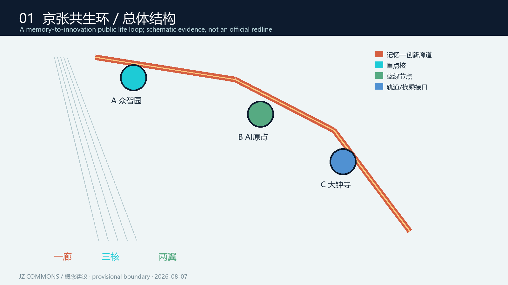
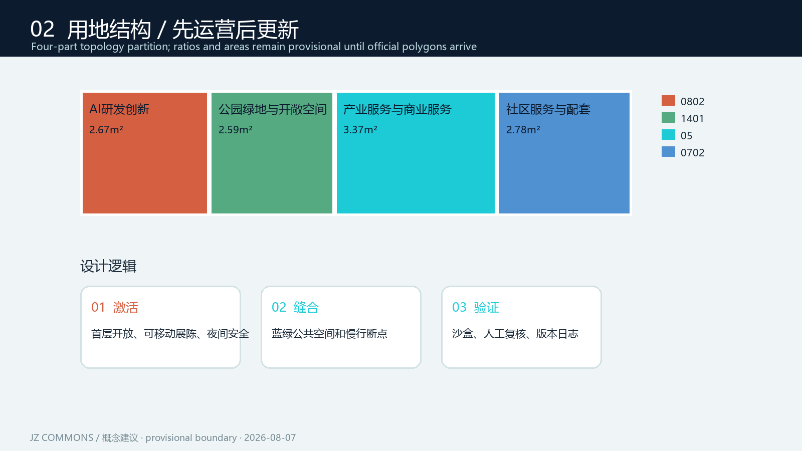
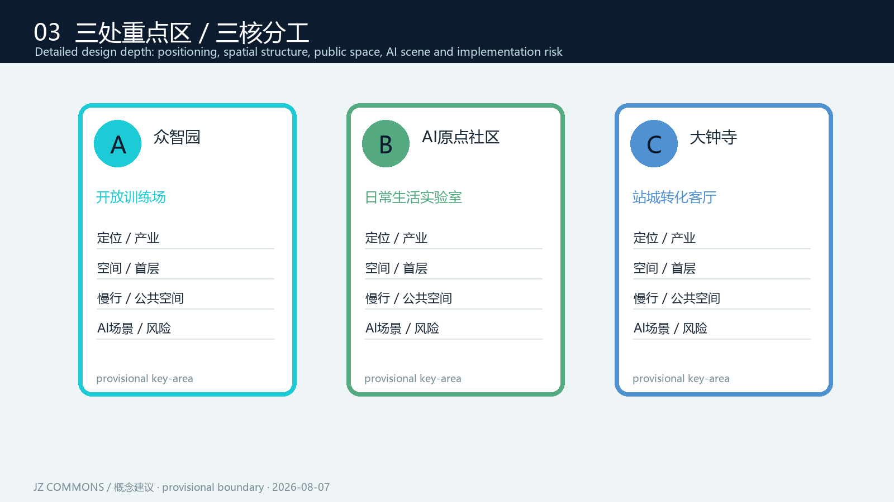
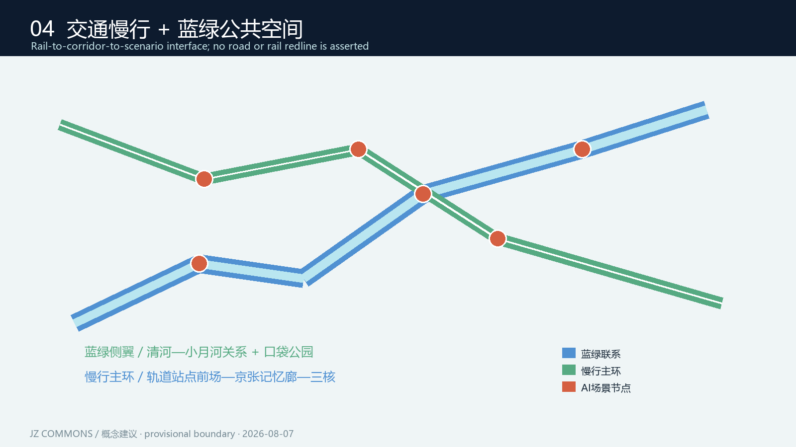

PROVISIONAL / 临时粗略边界开放共创建议非官方红线 / 非审批结论

总览地图 / 三层范围 / 任务覆盖 / 自检状态
三层范围
统筹研究 43.6 km² · 总体设计 11.413 km² · 重点设计约368.4 ha
三区两翼
众智园开放训练场 / AI原点日常生活实验室 / 大钟寺站城转化客厅；社区生活翼 + 产业验证翼。
证据状态
GeoJSON → metrics.json → 矩阵 → 图纸 → offline HTML。官方边界、FAR、高度、密度、退界待补。
重点区域 / 用地分区 / 交通慢行 / 蓝绿公共空间

完整分区：AI研发、公园绿地、产业服务、社区配套。

三处重点区均包含定位、空间、慢行、场景和风险响应。

轨道—廊道—场景三级接口，蓝绿侧翼缝合慢行断点。
核心指标
12.3423% 绿地比例
7.3281% 公共空间比例
310,807 m² 概念建筑基底
AI 场景 / 更新项目 / 运营机制
记忆导览 · 无障碍路径助手 · 社区健康问答 · 儿童安全步行 · 绿色能源看板
开发者夜校 · 模型安全评测台（测试验证） · 机器人协作街（测试验证） · 城市问题挑战赛（测试验证） · 企业服务 Copilot
来源与假设
来源：公开征集公告、agent_taskbook、site package、本地标准快照与仓库临时边界。假设：官方 polygon 发布后，所有空间层与指标统一复算；所有场景采用数据最小化、明示同意、人工复核、可退出和离线替代。
本页面为离线静态展示，不加载 CDN、远程地图瓦片、外部脚本、外部字体、iframe、API 或追踪器。空间落地建议均为概念建议、参考方案，可供专业团队深化研究。